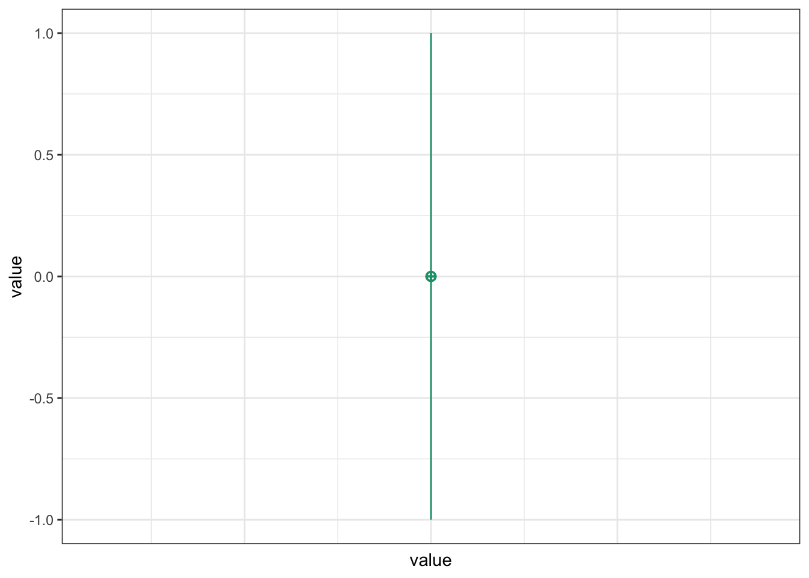
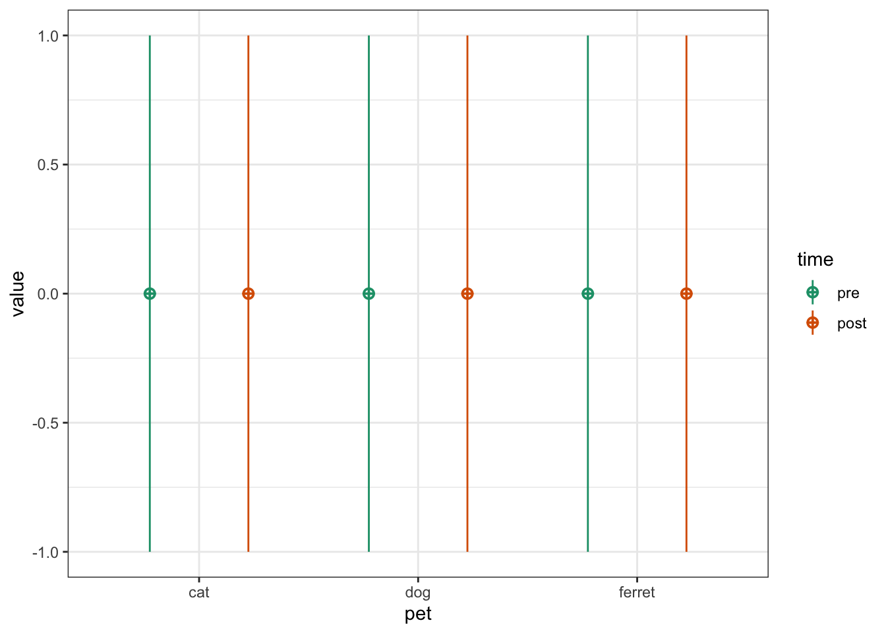
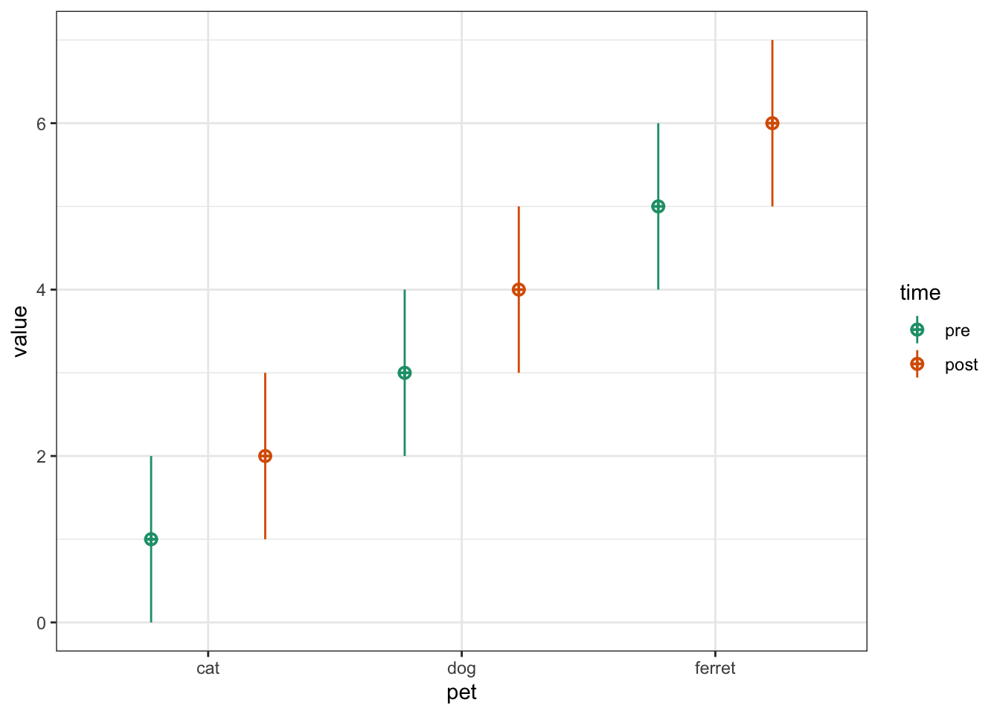
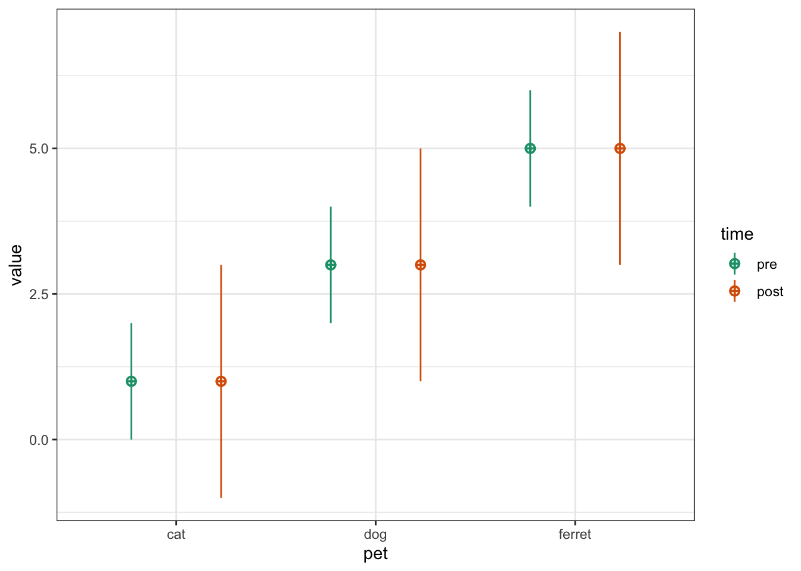
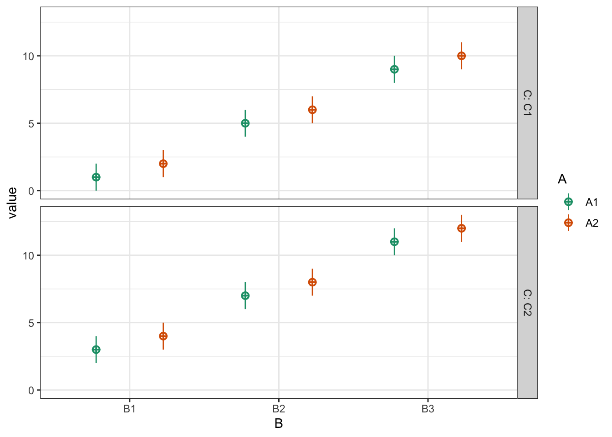
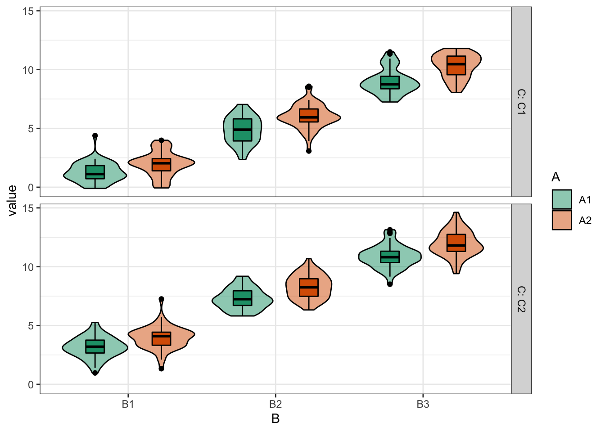
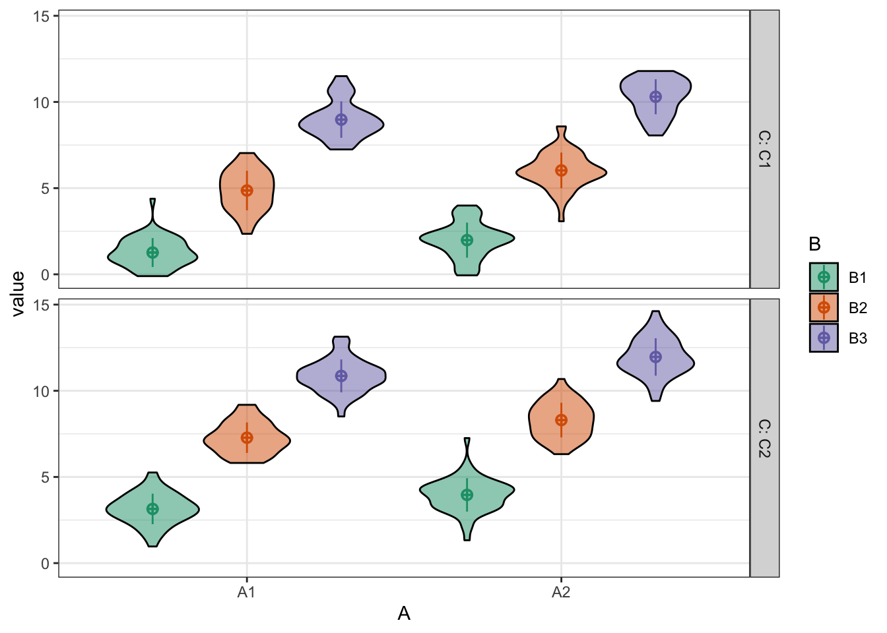
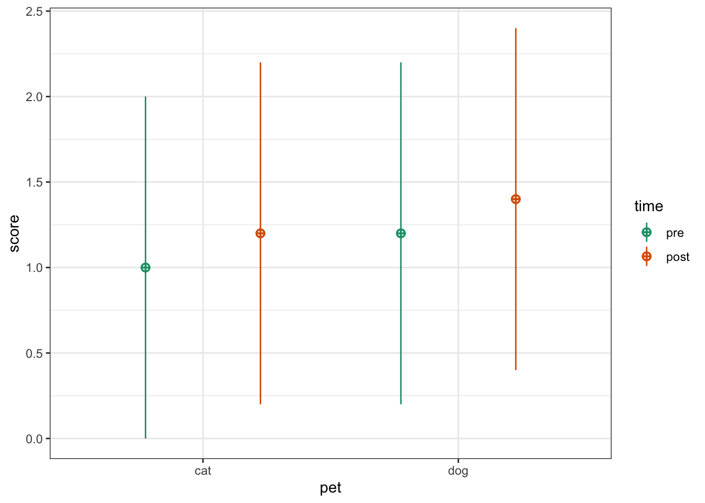

Chapter 1 Intro to Faux
library(tidyverse)
library(faux)
library(broom)
library(afex)
set.seed(8675309) # Jenny, I've got your numberIn this tutorial, we’ll learn how to simulate data for factorial designs using {faux}. There are more extensive examples at https://debruine.github.io/faux/.
1.1 Multivariate normal
You can create sets of correlated normally distributed values using rnorm_multi().
dat3 <- rnorm_multi(
n = 50,
vars = 3,
mu = c(1, 2, 3),
sd = c(0.5, 1, 1.5),
r = c(0, .25, .5),
varnames = c("A", "B", "C")
)The function get_params() gives you a quick way to see the means, SDs and correlations in the simulated data set to make sure you set the parameters correctly.
get_params(dat3)| n | var | A | B | C | mean | sd |
|---|---|---|---|---|---|---|
| 50 | A | 1.00 | 0.01 | 0.31 | 1.00 | 0.42 |
| 50 | B | 0.01 | 1.00 | 0.38 | 1.93 | 0.92 |
| 50 | C | 0.31 | 0.38 | 1.00 | 2.85 | 1.31 |
If you set empirical to TRUE, the values you set will be the sample parameters, not the population parameters. This isn’t usually what you want for a simulation, but can be useful to check you set the parameters correctly.
dat3 <- rnorm_multi(
n = 50,
vars = 3,
mu = c(1, 2, 3),
sd = c(0.5, 1, 1.5),
r = c(0, .25, .5),
varnames = c("A", "B", "C"),
empirical = TRUE
)
get_params(dat3)| n | var | A | B | C | mean | sd |
|---|---|---|---|---|---|---|
| 50 | A | 1.00 | 0.0 | 0.25 | 1 | 0.5 |
| 50 | B | 0.00 | 1.0 | 0.50 | 2 | 1.0 |
| 50 | C | 0.25 | 0.5 | 1.00 | 3 | 1.5 |
1.1.1 Shortcuts
There are a few shortcuts you can use. Run the following and see if you can guess how they work.
guess1 <- rnorm_multi(50, mu = c(x = 1, y = 2, z = 3), empirical = TRUE)
get_params(guess1)| n | var | x | y | z | mean | sd |
|---|---|---|---|---|---|---|
| 50 | x | 1 | 0 | 0 | 1 | 1 |
| 50 | y | 0 | 1 | 0 | 2 | 1 |
| 50 | z | 0 | 0 | 1 | 3 | 1 |
guess2 <- rnorm_multi(50, vars = 4, r = 0.5, empirical = TRUE)
get_params(guess2)| n | var | X1 | X2 | X3 | X4 | mean | sd |
|---|---|---|---|---|---|---|---|
| 50 | X1 | 1.0 | 0.5 | 0.5 | 0.5 | 0 | 1 |
| 50 | X2 | 0.5 | 1.0 | 0.5 | 0.5 | 0 | 1 |
| 50 | X3 | 0.5 | 0.5 | 1.0 | 0.5 | 0 | 1 |
| 50 | X4 | 0.5 | 0.5 | 0.5 | 1.0 | 0 | 1 |
iris_r <- cor(iris[, 1:4])
iris_mu <- summarise_all(iris[, 1:4], mean) %>% t()
iris_sd <- summarise_all(iris[, 1:4], sd) %>% t()
guess3 <- rnorm_multi(50,
mu = iris_mu,
sd = iris_sd,
r = iris_r)
get_params(guess3)| n | var | Sepal.Length | Sepal.Width | Petal.Length | Petal.Width | mean | sd |
|---|---|---|---|---|---|---|---|
| 50 | Sepal.Length | 1.00 | -0.19 | 0.84 | 0.81 | 6.03 | 0.77 |
| 50 | Sepal.Width | -0.19 | 1.00 | -0.57 | -0.49 | 3.10 | 0.50 |
| 50 | Petal.Length | 0.84 | -0.57 | 1.00 | 0.97 | 3.90 | 1.79 |
| 50 | Petal.Width | 0.81 | -0.49 | 0.97 | 1.00 | 1.25 | 0.76 |
You can set the r for correlations in a few different ways.
If all correlations have the same value, just set r equal to a single number.
# all correlations the same value
rho_same <- rnorm_multi(50, 4, r = .5, empirical = TRUE)
get_params(rho_same)| n | var | X1 | X2 | X3 | X4 | mean | sd |
|---|---|---|---|---|---|---|---|
| 50 | X1 | 1.0 | 0.5 | 0.5 | 0.5 | 0 | 1 |
| 50 | X2 | 0.5 | 1.0 | 0.5 | 0.5 | 0 | 1 |
| 50 | X3 | 0.5 | 0.5 | 1.0 | 0.5 | 0 | 1 |
| 50 | X4 | 0.5 | 0.5 | 0.5 | 1.0 | 0 | 1 |
You can set rho to a vector or matrix of the full correlation matrix. This is convenient when you’re getting the values from an existing dataset, where you can just use the output of the cor() function.
# full correlation matrix
# X1 X2 X3 X4
rho <- c(1.0, 0.5, 0.4, 0.3, # X1
0.5, 1.0, 0.2, 0.1, # X2
0.4, 0.2, 1.0, 0.0, # X3
0.3, 0.1, 0.0, 1.0) # X4
rho_cormat <- rnorm_multi(50, 4, r = rho, empirical = TRUE)
get_params(rho_cormat)| n | var | X1 | X2 | X3 | X4 | mean | sd |
|---|---|---|---|---|---|---|---|
| 50 | X1 | 1.0 | 0.5 | 0.4 | 0.3 | 0 | 1 |
| 50 | X2 | 0.5 | 1.0 | 0.2 | 0.1 | 0 | 1 |
| 50 | X3 | 0.4 | 0.2 | 1.0 | 0.0 | 0 | 1 |
| 50 | X4 | 0.3 | 0.1 | 0.0 | 1.0 | 0 | 1 |
Alternatively, you can just specify the values from the upper right triangle of a correlation matrix. This is easier if you’re reading the values out of a paper.
# upper right triangle
# X2 X3 X4
rho <- c(0.5, 0.4, 0.3, # X1
0.2, 0.1, # X2
0.0) # X3
rho_urt <- rnorm_multi(50, 4, r = rho, empirical = TRUE)
get_params(rho_urt)| n | var | X1 | X2 | X3 | X4 | mean | sd |
|---|---|---|---|---|---|---|---|
| 50 | X1 | 1.0 | 0.5 | 0.4 | 0.3 | 0 | 1 |
| 50 | X2 | 0.5 | 1.0 | 0.2 | 0.1 | 0 | 1 |
| 50 | X3 | 0.4 | 0.2 | 1.0 | 0.0 | 0 | 1 |
| 50 | X4 | 0.3 | 0.1 | 0.0 | 1.0 | 0 | 1 |
1.2 Factorial Designs
You can use rnorm_multi() to simulate data for each between-subjects cell of a factorial design and manually combine the tables, but faux has a function that better maps onto how we usually think and teach about factorial designs.
The default design is 100 observations of one variable (named y) with a mean of 0 and SD of 1. Unless you set plot = FALSE or run faux_options(plot = FALSE), this function will show you a plot of your design so you can check that it looks like you expect.
simdat1 <- sim_design()
1.2.1 Factors
Use lists to set the names and levels of within- and between-subject factors.
pettime <- sim_design(
within = list(time = c("pre", "post")),
between = list(pet = c("cat", "dog", "ferret"))
)
You can set mu and sd with unnamed vectors, but getting the order right can take some trial and error.
pettime <- sim_design(
within = list(time = c("pre", "post")),
between = list(pet = c("cat", "dog", "ferret")),
mu = 1:6
)
You can set values with a named vector for a single type of factor. The values do not have to be in the right order if they’re named.
pettime <- sim_design(
within = list(time = c("pre", "post")),
between = list(pet = c("cat", "dog", "ferret")),
mu = c(cat = 1, ferret = 5, dog = 3),
sd = c(pre = 1, post = 2)
)
Or use a data frame for within- and between-subject factors.
pettime <- sim_design(
within = list(time = c("pre", "post")),
between = list(pet = c("cat", "dog", "ferret")),
mu = data.frame(
pre = c(1, 3, 5),
post = c(2, 4, 6),
row.names = c("cat", "dog", "ferret")
)
)If you have within-subject factors, set the correlations for each between-subject cell like this.
pettime <- sim_design(
within = list(time = c("pre", "post")),
between = list(pet = c("cat", "dog", "ferret")),
r = list(cat = 0.5,
dog = 0.25,
ferret = 0),
empirical = TRUE,
plot = FALSE
)
get_params(pettime)| pet | n | var | pre | post | mean | sd |
|---|---|---|---|---|---|---|
| cat | 100 | pre | 1.00 | 0.50 | 0 | 1 |
| cat | 100 | post | 0.50 | 1.00 | 0 | 1 |
| dog | 100 | pre | 1.00 | 0.25 | 0 | 1 |
| dog | 100 | post | 0.25 | 1.00 | 0 | 1 |
| ferret | 100 | pre | 1.00 | 0.00 | 0 | 1 |
| ferret | 100 | post | 0.00 | 1.00 | 0 | 1 |
You can also change the name of the dv and id columns and output the data in long format. If you do this, you also need to tell get_params() what columns contain the between- and within-subject factors, the dv, and the id.
dat_long <- sim_design(
within = list(time = c("pre", "post")),
between = list(pet = c("cat", "dog", "ferret")),
id = "subj_id",
dv = "score",
long = TRUE,
plot = FALSE
)
get_params(dat_long,
between = "pet",
within = "time",
id = "subj_id",
dv = "score",
digits = 3)| pet | n | var | pre | post | mean | sd |
|---|---|---|---|---|---|---|
| cat | 100 | pre | 1.000 | 0.071 | -0.001 | 1.120 |
| cat | 100 | post | 0.071 | 1.000 | 0.036 | 0.875 |
| dog | 100 | pre | 1.000 | 0.127 | -0.036 | 1.081 |
| dog | 100 | post | 0.127 | 1.000 | 0.065 | 0.976 |
| ferret | 100 | pre | 1.000 | 0.075 | 0.072 | 0.967 |
| ferret | 100 | post | 0.075 | 1.000 | 0.035 | 0.936 |
The current version of faux doesn’t actually need between or dv and later versions won’t need within or id if a data frame was created with faux.
1.2.2 Anonymous Factors
If you need to make a quick demo, you can set factors anonymously with integer vectors. For example, the following code makes 3B*2B*2W mixed design.
dat_anon <- sim_design(
n = 50,
between = c(3, 2),
within = 2,
mu = 1:12
)
Faux has a quick plotting function for visualising data made with faux. The plot created by sim_design() shows the design, while this function shows the simulated data.
plot(dat_anon) You can change the order of plotting and the types of geoms plotted. This takes a little trial and error, so this function will probably be refined in later versions.
plot(dat_anon, "B", "A", "C", geoms = c("violin", "pointrangeSD"))
1.3 Replications
You often want to simulate data repeatedly to do things like calculate power. The sim_design() function has a lot of overhead for checking if a design makes sense and if the correlation matrix is possible, so you can speed up the creation of multiple datasets with the same design using the rep argument. This will give you a nested data frame with each dataset in the data column.
dat_rep <- sim_design(
within = 2,
n = 20,
mu = c(0, 0.25),
rep = 5,
plot = FALSE
)1.3.1 Analyse each replicate
You can run analyses on the nested data by wrapping your analysis code in a function then using map() to run the analysis on each data set and unnest() to expand the results into a data table.
analyse <- function(data) {
t.test(data$A1, data$A2, paired = TRUE) %>% broom::tidy()
}
dat_rep %>%
mutate(analysis = map(data, analyse)) %>%
select(-data) %>%
unnest(analysis)| rep | estimate | statistic | p.value | parameter | conf.low | conf.high | method | alternative |
|---|---|---|---|---|---|---|---|---|
| 1 | -0.1311559 | -0.4271395 | 0.6740791 | 19 | -0.7738319 | 0.5115202 | Paired t-test | two.sided |
| 2 | -0.2684812 | -1.1258509 | 0.2742492 | 19 | -0.7676038 | 0.2306414 | Paired t-test | two.sided |
| 3 | -0.3040475 | -0.9078698 | 0.3753187 | 19 | -1.0050056 | 0.3969106 | Paired t-test | two.sided |
| 4 | -0.5503311 | -1.9942297 | 0.0606779 | 19 | -1.1279257 | 0.0272635 | Paired t-test | two.sided |
| 5 | -0.1431282 | -0.4865269 | 0.6321583 | 19 | -0.7588616 | 0.4726051 | Paired t-test | two.sided |
1.3.2 ANOVA
Use the same pattern to run an ANOVA on a version of the pettime dataset.
First, simulate 100 datasets in long format. These data will have small main effects of pet and time, but no interaction.
pettime100 <- sim_design(
within = list(time = c("pre", "post")),
between = list(pet = c("cat", "dog")),
n = c(cat = 50, dog = 40),
mu = data.frame(
pre = c(1, 1.2),
post = c(1.2, 1.4),
row.names = c("cat", "dog")
),
sd = 1,
id = "pet_id",
dv = "score",
r = 0.5,
long = TRUE,
rep = 100
)
Then set up your analysis. We’ll use the aov_ez() function from the {afex} package because its arguments match those of sim_design().
afex::set_sum_contrasts() # avoids annoying afex message## setting contr.sum globally: options(contrasts=c('contr.sum', 'contr.poly'))afex_options(include_aov = FALSE) # runs faster
afex_options(es_aov = "pes") # changes effect size measure to partial eta squared
analyse <- function(data) {
a <- afex::aov_ez(
id = "pet_id",
dv = "score",
between = "pet",
within = "time",
data = data
)
# return anova_table for GG-corrected DF
as_tibble(a$anova_table, rownames = "term") %>%
mutate(term = factor(term, levels = term)) %>% # keeps terms in order
rename(p.value = `Pr(>F)`) # fixes annoying p.value name
}Make a table of the results of each analysis:
pettime_sim <- pettime100 %>%
mutate(analysis = map(data, analyse)) %>%
select(-data) %>%
unnest(analysis)| rep | term | num Df | den Df | MSE | F | pes | p.value |
|---|---|---|---|---|---|---|---|
| 1 | pet | 1 | 88 | 1.416 | 0.667 | 0.008 | 0.416 |
| 1 | time | 1 | 88 | 0.534 | 0.544 | 0.006 | 0.463 |
| 1 | pet:time | 1 | 88 | 0.534 | 0.035 | 0.000 | 0.852 |
| 2 | pet | 1 | 88 | 1.178 | 2.442 | 0.027 | 0.122 |
| 2 | time | 1 | 88 | 0.498 | 11.016 | 0.111 | 0.001 |
| 2 | pet:time | 1 | 88 | 0.498 | 1.820 | 0.020 | 0.181 |
Then you can summarise the data to calculate things like power for each effect or mean effect size.
pettime_sim %>%
group_by(term) %>%
summarise(power = mean(p.value < 0.05),
mean_pes = mean(pes),
.groups = "drop")| term | power | mean_pes |
|---|---|---|
| pet | 0.15 | 0.0212741 |
| time | 0.37 | 0.0424412 |
| pet:time | 0.03 | 0.0089845 |
The power for the between-subjects effect of pet is smaller than for the within-subjects effect of time. What happens if you reduce the correlation between pre and post?